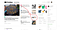

Tribe Trading or CrowdTrading
From crowdfunding to Crowdtrading

I was just trying to access the medium text editor by clicking on the menu but while I was waiting for the page to load my eyes focused on this image in red

once my view was set to this image of umbrellas I remembered I consumed this same picture days ago and the only fact to see it led me to a simple game idea where you hold one umbrella, your goal being to not let the rain reach this moving character you are covering from it. Just figure out writing this last sentence that I was planning to write crowd trading or tribe investing. an Article about online social influence in trading like these short squeeze we experienced with Gamestop and signal Advance. Remarqued that shot position covering has something to do with this influence and covering is the core function of an umbrella. So here is what I was intended to say before this short introduction about Cognitive process like this one.
We talked and worked a lot on the predatorial effects of high-frequency trading on institutional investors but we were defending institutional investors because we thought they represented retail investors. Now that social trading is widely accessible to everybody, retail investors can group themselves in tribe and express their opinions with real market orders choosing the brokers they want and the stock they want. More they can be as powerful as telling what stock will gonna go up. if $x of buy positions make the stock price increase by $Y and if these short-selling institutional investors lose $L induced by this price increase. The question is will these institutional investors that can be banks, hedge funds, investment firms, mutual funds, ETFs … able to handle this loss. If not they will cover by selling or buying options that will make us retail investors make money in turn.
They will be a trending short position liquidation that a smart investor like you can benefit from right now because they will be covering themselves until this short squeeze trend dispels.
All of this is about the application of the wisdom of the crowd like for crowdsourcing music hits signal and how ideas spread in a given medium